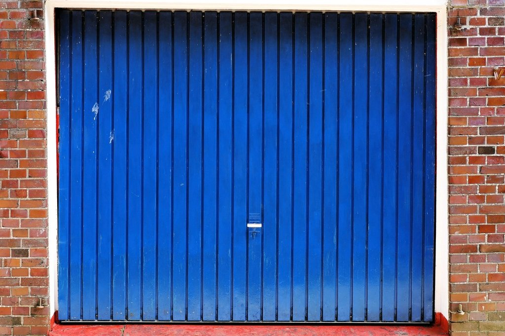
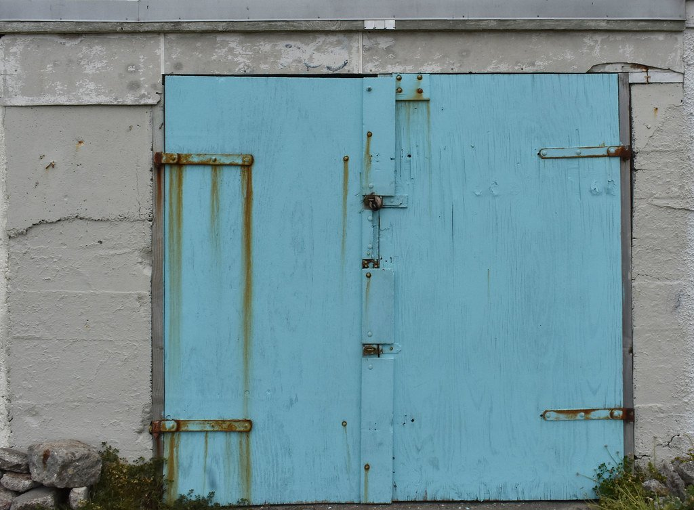
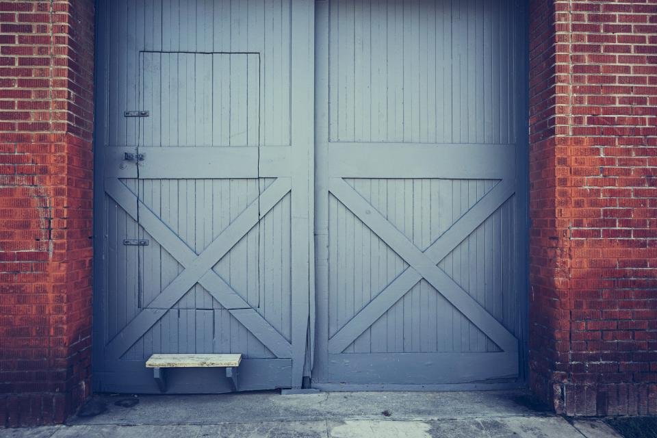
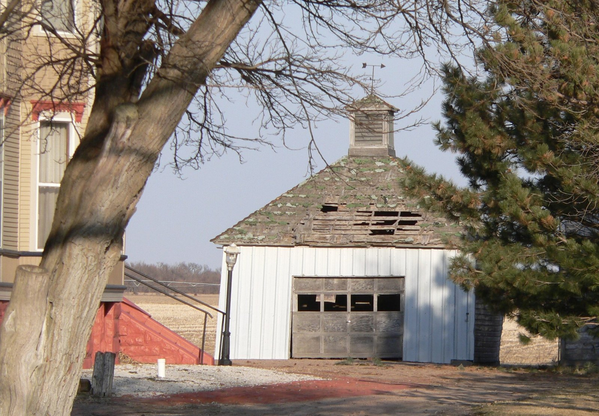
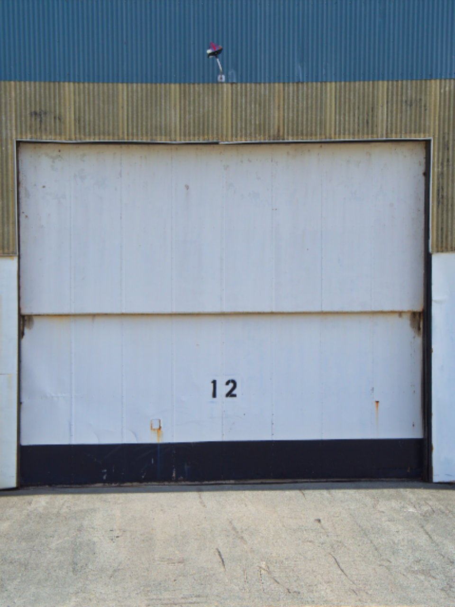
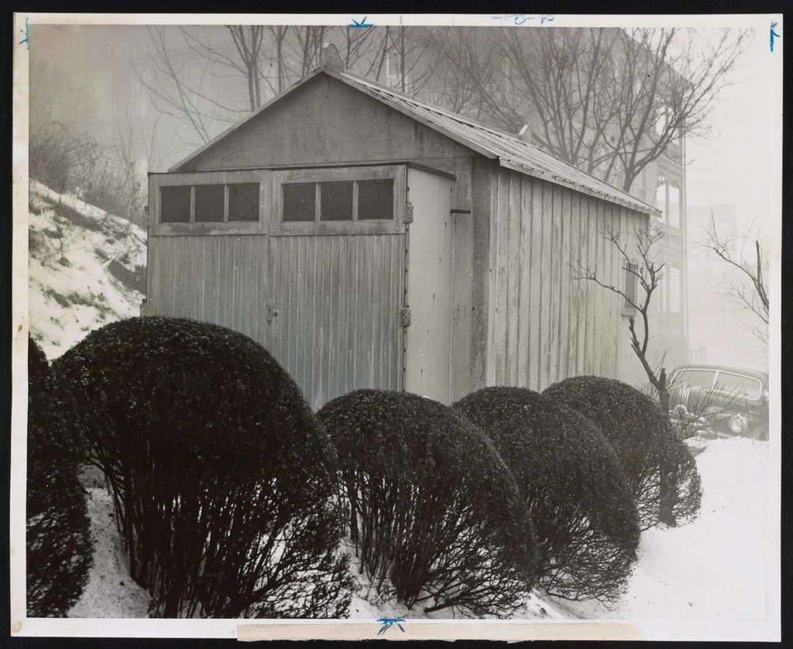
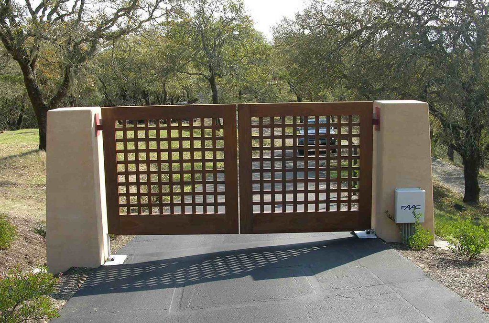
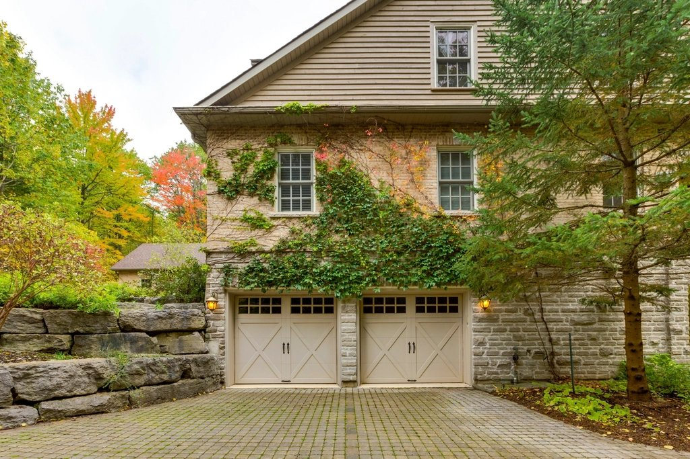

Yucca Valley doors and gates, done right, priced in writing.
An old garage door that has seen better days. A gate that sticks, sags, or needs replacing. Unlimited Garage Doors & Gates is an owner-run garage door and gate business in Yucca Valley. The owner looks at the door or gate and the opening first, then puts the price in writing before any work starts.
UNLIMITED GARAGE DOORS & GATES · 58314 DELANO TRAIL · YUCCA VALLEY CA 92284
The work · drag the line
Before and after, typical jobs.
Sample garage door and gate jobs typical of this area. The photos are stock images typical of this kind of job, not photos of Unlimited Garage Doors & Gates jobs. Towns and durations are typical of this kind of job, not a record of a specific completed contract. Drag the divider, or focus the handle and use the arrow keys.
SAMPLE 01
Garage door replacement, Yucca Valley


BEFOREAFTER
LocationYucca Valley CA 92284
Typical duration1 day
Who you callThe owner
Old doors taken out and hauled off, the opening checked and prepped, then the new door installed and checked open and closed. Photos are stock images typical of this kind of job.
SAMPLE 02
Garage door installation, Yucca Valley


BEFOREAFTER
LocationYucca Valley CA
Typical duration1-2 days
Who you callThe owner
Worn door taken down, the opening measured, then the new doors hung, adjusted, and checked. Photos are stock images typical of this kind of job.
SAMPLE 03
Garage door replacement, older building, Yucca Valley


BEFOREAFTER
LocationYucca Valley CA
Typical duration1-2 days
Who you callThe owner
Old door taken out and hauled off, the frame checked and prepped, then the new door installed and checked. Photos are stock images typical of this kind of job.
Scope of work
What we do, and how long it usually takes.
Typical time on site for a standard job. Your written quote gives the schedule for your job specifically.

Garage doors, installed and repaired1-2 days
Gates, installed and repaired1-2 days
Door and gate operatorsby the job
The paperwork
What the written quote covers.
One page, line by line, before any work starts. If something is not on the list, it is named in the exclusions on the same page.
01The work, described in plain words
02Opening sizes, measured
03Door, gate, or operator named by type and size
04Removal and haul-away of the old door or gate, or a note that it is excluded
05What gets checked before the job is called done
06Anything that could change the price, flagged up front
07What is not included, in writing
First call to finished job
Five steps, in order.
1
You call
Call 760-567-7382. The owner asks a few questions so the first visit is the right visit.
2
A look at the job
The owner looks at the door or gate, the opening, and how it runs now, measures, and asks what it has to do.
3
Price in writing
Materials, labor, and anything that could change the number, on paper. Compare it with anyone you like.
4
The work
The work area cleared, the door or gate installed or repaired, the operation checked open and closed, and old parts hauled off before anyone calls it done.
5
Walk-through
The owner shows you what was done and what to watch for, and answers questions before anyone leaves.
FIG. 1 · LOOK FIRST, PRICE IT, THEN DO IT
In writing, not in passing
Before you hire anyone, including us.
Get the terms on the quote
Ask how the workmanship is covered and for how long, and make sure the answer is written on the quote. Manufacturer warranties on doors, gates, and operators are separate, and worth keeping with your paperwork.
Ask for the paperwork
Written quotebefore work starts
Proof of insuranceask for it
Permitswhen the job needs one
Any contractor worth hiring will hand these over without a fuss.
Who answers
You talk to the owner, not a call center.
The owner runs the job from the first call to the walk-through. Call 760-567-7382 for hours and scheduling.
Unlimited Garage Doors & GatesUnlimited Garage Doors & Gates is owner-run. Call 760-567-7382 to talk about your door or gate.Doors and gatesGarage doors, gates, and door operators, installed or repaired, each priced in writing.Stock photosPhotos on this page are stock images typical of this kind of job, not photos of Unlimited Garage Doors & Gates jobs.
Asked every week
Straight answers.
What are your hours?
Call for hours. The owner will tell you when the door or gate can be looked at.
Do you install gates as well as garage doors?
Yes. Garage doors, gates, and door operators are all part of the work. The door or gate gets looked at first, and the price goes in writing.
Can I get a price over the phone?
A rough idea at most. The door or gate and the opening get looked at first, then priced in writing.
Do you work outside Yucca Valley?
Call and ask. Unlimited Garage Doors & Gates is based in Yucca Valley, and the owner will tell you on the call whether your address works.
Where we work
Based in Yucca Valley.
Unlimited Garage Doors & Gates is based in Yucca Valley, in the High Desert. If you are close by, call the owner at 760-567-7382 and ask whether your address is in range.
YUCCA VALLEY

YUCCA VALLEY · HIGH DESERT
Start here
Call the owner, or send the details.
The fastest way is the phone. The owner answers, asks a few questions, and sets up a time to look at the job.
760-567-738258314 Delano Trail, Yucca Valley CA 92284 Hours: Call for hours
Preview form posts locally only (action="#"). Call the owner for a real quote.
Talk to the owner directly.Price in writing before any work starts.
No upfront design or setup cost. Once your site is live, it's $99/month and includes hosting, routine maintenance, and up to two hours of updates each month.
Questions or changes? Just reply to my text.
Working on updates to your site…
Updating the draft for Unlimited Garage Doors & Gates. Hang tight.
Change request
What should we update?
This is a live demo. Your note is saved in this browser only. We will simulate an update on the draft so you can see the change land.
Go-live journey · demo
Get Unlimited Garage Doors & Gates live
Go-live steps (demo). No real charge is made on this path.
Getting your site live…
DNS, SSL, and NAP checks. This is a demo checklist.
Sample messages the owner would get (shown only, not sent):
SMS · just now
Hi, your Unlimited Garage Doors & Gates site is live: https://bottomlineventuresinc-hue.github.io/tf-demo-unlimitedgd-yuccavalley/ · Reply if anything looks off.
Email · just now
Subject: Unlimited Garage Doors & Gates is live
Hi, your site is up. Bookmark the link above. If you need a tweak, reply to this email or use Request a change on the draft.
Sample outreach · demo
SMS journey for the owner
Human sequence from first touch to follow-up. Filled for Unlimited Garage Doors & Gates / the owner / Yucca Valley. Nothing is sent from this page.
1 · First text
Hi, this is Maria with Template Factory. I came across Unlimited Garage Doors & Gates and put together a sample site to show how your garage door work could look online. It's made just for your business. Would you like me to send it over?
2 · After they say yes
Thanks. Here it is: https://bottomlineventuresinc-hue.github.io/tf-demo-unlimitedgd-yuccavalley/ It shows your services, service area, and an easy way for customers to call you. There is no upfront design or setup cost. Once the site is live, it is $99/month and includes hosting, routine maintenance, and up to two hours of updates each month. Happy to change anything you'd like. What do you think?
3 · Follow-up
Hi, just checking back. I still have the sample site I made for Unlimited Garage Doors & Gates. Would you like me to send it?